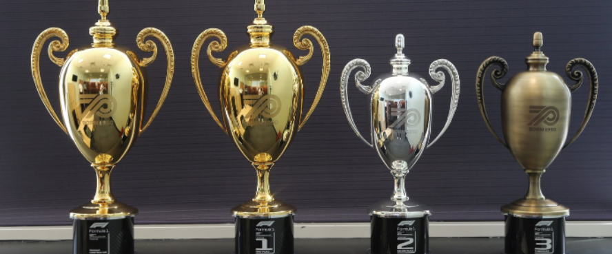

NOMAD GAMING & RACING
En esta pagina vas a poder encontrar juegos recomendados de la plataforma de Steam en PC.
Actualmente en temas de contenido solo tenemos 3 categorias de juegos:
> Carreras
> Survivals
> Shooters
Es una plataforma de distribución digital de videojuegos desarrollada por Valve Corporation.
Fue lanzada en septiembre de 2003 como una forma para Valve de proveer actualizaciones automáticas a sus juegos, pero finalmente se amplió para incluir juegos de terceros.
El torneo empieza el día Sabado 25/06/2022, a las 23:30PM, Luego se iniciara una carrera cada Sabado. Un total de 22 Carreras.
Fechas Siguientes: 25/06/2022, 02/07/2022, 09/07/2022.
Clasificación GP GTA Online | Sin tiempo.
